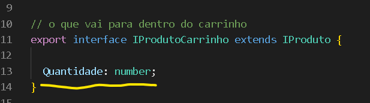
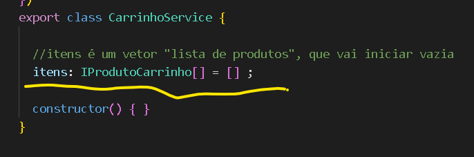
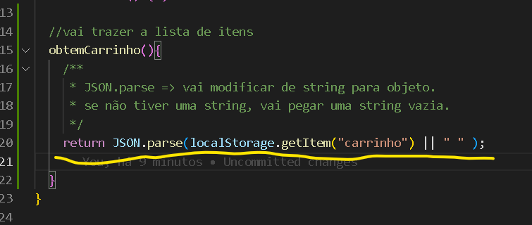
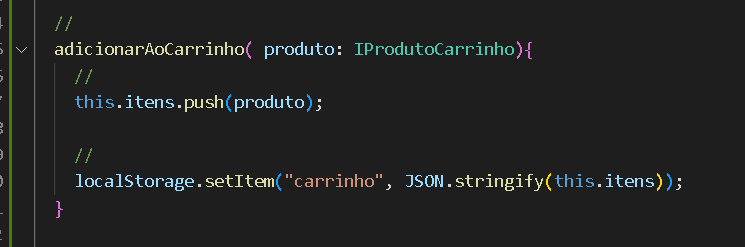
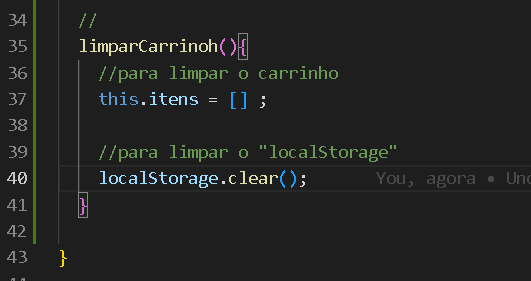
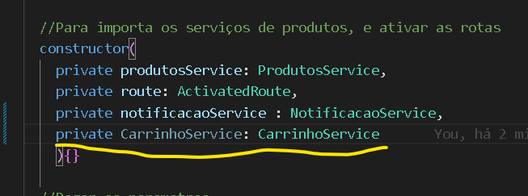
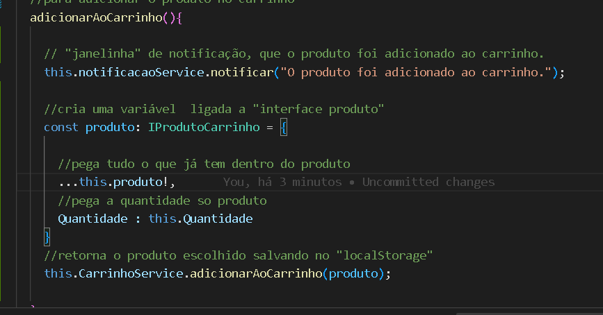
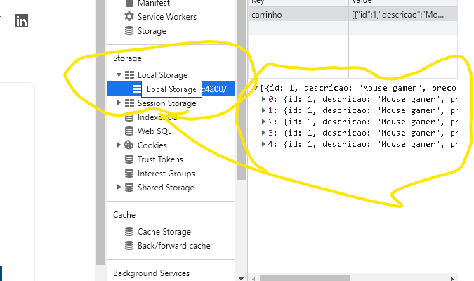
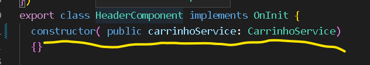
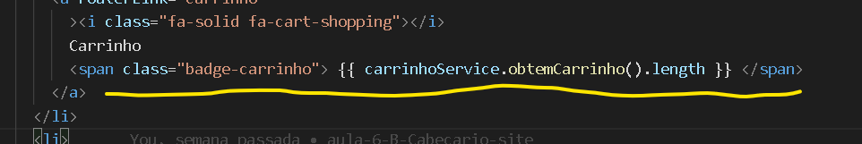

Adicionar no carrinho
Vamos criar a parte que vai adicionar no carrinho, pegando a quantidade e atualizando.
Para isso vamos criar um serviço, usando o comando ng g service carrinho.
Vai no componente produtos.ts, onde vamos criar a interface, o nome da interface será :
export interface IProdutoCarrinho extends IProduto, que vai ter os mesmo dados de produtos,
mas terá só uma propriedade diferente, a propriedade Quantidade, adiciona e diz que ela será "number.
"
Como está na imagem abaixo:

No componente carrinho.service.ts, já acrescenta a propriedade "itens : ",
que irá uma lista, vetor, que vai iniciar vazio.
Como está na imagem abaixo:

Agora, vamos começar a criar os métodos,
para adicionar ao carrinho, limpar o carrinho e obter informações do carrinho.
Primeiro método que vamos criar é o obtemCarrinho, que vai obter a lista de produtos,
as informações serão salvas dentro do "localStorage", quando você entrar já vai está salvo dentro do carrinho,
Como está na imagem abaixo:

Segundo método, adicionarAoCarrinho( produto: IProdutoCarrinho ), coloca um,
this.itens.push( produto ) = para acrescenta o novo produto no carrinho,
e para salvar isso no "localStorage":
localStorage.setItem( "carrinho", JSON.stringify(this.item) )
"( this.item )" é a lista de produtos.
"JSON.stringify" é para converter um objeto em string.
"carrinho" é a chave .
Então, vai pegar o item que é um objeto mas vai converter em string,
usando a chave "carrinho", vai salvar no "localStorage"
Como está na imagem abaixo:

Terceiro método é para limpar o carrinho, nome do método é limparCarrinho(),
para limpar os itens = this.itens = [] ,
para limpar o localStorage = localStorage.clear(),
Como na imagem abaixo:

Agora vamos usar esses métodos dentro da página.
Vai no componente detalhes-produto.component.ts,
vai dizer que vai ultilizar o serviço de carrinho, dentro do "constructor",
você adiciona o private carrinhoService : carrinhoService.
Como está na imagem abaixo:

Agora, vai no método "adicionarAoCarrinho", e acrescenta esses códigos,
const produto: IProdutoCarrinho = { , variável ligada a interface dos produtos,
...this.produto!,, pega todos os dados do produtos,descriçao,preço,etc...,
Quantidade : this.Quantidade, pega a quantidade desse produto,
fecha o "}", e logo abaixo coloque :
this.CarrinhoService.adicionarAoCarrinho(produto);, vai retorna o produto, e salvar no "localStorage".
Veja como fica na imagem abaixo:

Para verificar de deu certo, vai na página, clique no botão "F12", para inspecionar a página,
depois vai em "source", "application", "localStorage",dentro dessa pasta, clique no link abaixo,
quando você clicar no botão para adicionar o carrinho, veja se foi adicionado no "localStorage".
Como na imagem abaixo:

Agora, vamos atualizar o contador de quantidade de produtos em estoque,
no componente header.components, você adiciona nos parametros do "constructor",
esse código public carrinhoService: CarrinhoService.
Como fica na imagem abaixo:

Depois vai no componente header.componet.html, e na parte do carrinho, no lugar do número,
{{ carrinhoService.obtemCarrinho().length }}, para mostrar na página,
quantos itens há dentro do carrinho.
Veja como é o código na imagem abaixo:

Essa parte de adiciona os itens no carrinho terminou.
Mas ainda falta algumas coisas .